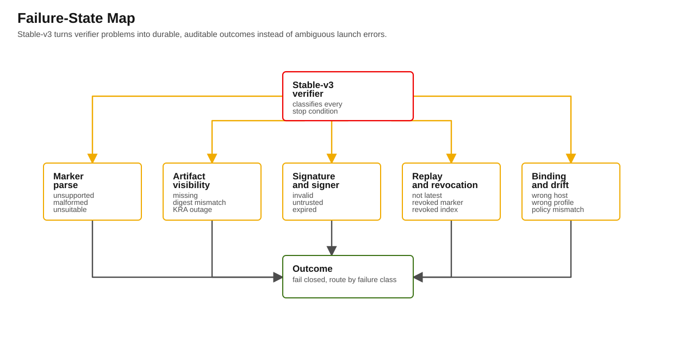

v3 packet
Calabi Negative Evidence Packet (Destructive v3 Gate)
Record fail-closed evidence for Blastwall v3 stable-v3 policy gates on Calabi. This packet contains the live destructive matrix captured through the historical negative-gate evidence branch plus the later v3 mixed-state,

Purpose
Record fail-closed evidence for Blastwall v3 stable-v3 policy gates on Calabi. This packet contains the live destructive matrix captured through the historical negative-gate evidence branch plus the later v3 mixed-state, service-custody, and continuous verification evidence.
Calabi is reference-topology evidence. It proves this lab path and should not be read as broad portability proof for arbitrary RHEL, OpenShift, IdM, AAP, or KRA generations.
Scope
- Baseline branch:
v3 - Historical destructive-evidence branch:
blastwall-v3-negative-gate-calabi - Goal: prove fail-closed behavior and infra-only breakglass constraints under live negative conditions.
- Claim boundary: Calabi reference topology. Fleet-scale and broad portability claims require separate evidence.
Required case set
Each case below must be captured against a controlled/disposable Calabi host:
- Missing envelope
- Missing index
- Wrong generation / replayed attestation
- Revoked marker/index
- Expired attestation
- Policy hash drift
- KRA canary stale or missing
- Vault auth failure
- Breakglass infra-visibility bypass
- Breakglass rejection for security failures
- Signature tamper
- Profile mismatch
Expected failure behavior
FAIL_ATTESTATION_NOT_VISIBLE: envelope missing or not visible from configured KRA path.FAIL_INDEX_NOT_VISIBLE: index missing or stale/inaccessible.- Replay / binding anomalies:
FAIL_REPLAYED_ATTESTATIONor binding failure. FAIL_REVOKED_ATTESTATION: revoked marker/index.- Host-verification failures (
FAIL_DRIFTED_POLICY, bad signature, profile mismatch, signer mismatch): no breakglass bypass. - Infrastructure-class failures may allow breakglass only when explicitly scoped and operator approved.
Evidence status (this pack)
| Case | Expected | Live Calabi capture |
|---|---|---|
| Missing envelope | FAIL_ATTESTATION_NOT_VISIBLE |
AAP mutation job 3414; preflight job 3421 failed as FAIL_ATTESTATION_NOT_VISIBLE with failure_class=vault_not_found; restore job 3425 |
| Missing index | FAIL_INDEX_NOT_VISIBLE |
AAP mutation job 3432; preflight job 3439 failed as FAIL_INDEX_NOT_VISIBLE with failure_class=vault_not_found; restore job 3443 |
| Digest mismatch | FAIL_ATTESTATION_INTEGRITY |
Final recapture after project sync 4221: artifact 4222; mutation 4226; inventory 4230; preflight 4233 failed as FAIL_ATTESTATION_INTEGRITY; restore 4237; restore inventory 4241. Historical job 3457 failed closed before normalization. |
| Wrong generation | replay/binding failure | AAP artifact job 3520; mutation job 3524; preflight job 3531 failed as FAIL_REPLAYED_ATTESTATION; breakglass job 3535 rejected; restore job 3539 |
| Revoked marker/index | FAIL_REVOKED_ATTESTATION |
Revoked-index artifact job 3568; mutation job 3572; preflight job 3579 failed as FAIL_REVOKED_ATTESTATION; restore job 3583. Final revoked-marker recapture after project sync 4221: artifact 4244; mutation 4248; inventory 4252; preflight 4255 failed as FAIL_REVOKED_ATTESTATION; restore 4259; restore inventory 4263; final safety restore 4266; inventory 4270. |
| Expired attestation | expired attestation failure | AAP artifact job 3546; mutation job 3550; preflight job 3557 failed as FAIL_STALE_ATTESTATION; restore job 3561 |
| Policy hash drift | FAIL_DRIFTED_POLICY |
AAP preflight job 2827, failed as expected; current-branch job 3478 failed as FAIL_DRIFTED_POLICY |
| KRA stale/missing canary | infra visibility failure | positive job 3698; missing-canary job 3701 failed FAIL_CANARY_MISSING; bad-primary job 3702 failed closed; canary schedule job 3731 passed |
| Vault auth failure | auth/infra failure | no forced bad-credential destructive job in this packet; strict audit job 3772 proves normal Controller authentication and no longer misclassifies missing artifact as auth failure |
| Breakglass infra-visibility bypass | scoped breakglass may pass only for artifact/index visibility | Missing-envelope mutation job 3660; breakglass preflight job 3667 passed with override_failure_state=FAIL_ATTESTATION_NOT_VISIBLE; restore job 3671 |
| Breakglass security failure rejection | breakglass rejected for signature, drift, profile, and revocation failures | Signature job 3509, replay job 3535, profile job 3627, policy drift job 3682, and signer job 3686 all rejected breakglass |
| Signature tamper | signature failure | AAP artifact job 3494; mutation job 3498; preflight job 3505 failed as FAIL_SIGNATURE_INVALID; breakglass job 3509 rejected; restore job 3513 |
| Profile mismatch | binding/match failure | AAP artifact job 3612; mutation job 3616; preflight job 3623 failed as FAIL_PROFILE_MISMATCH; breakglass job 3627 rejected; restore job 3631 |
| Host binding mismatch | FAIL_BINDING_MISMATCH |
AAP artifact job 3638; mutation job 3642; preflight job 3649 failed as FAIL_BINDING_MISMATCH; restore job 3653 |
Current live evidence after pre-mortem remediation
Captured on 2026-05-20 UTC and refreshed on 2026-05-25 UTC:
- Branch:
v3. - Controller project sync
4221, successful, observed commitf50c1228ddcf4544a38634f05fd87179210c6917. - Controller project sync
4871, successful, observed commit93fab21cd548c4ff7ca2d2addb21ecc1ad5c2cc3. - Stable-v3 shared-custody guard: job
3918failed closed withstable-v3 rejects shared vault scope. - Earlier stable-v3 non-shared custody probes
3914,3987, and3991failed in the Controller vault-health path before the non-shared argument remediation. They are superseded by service-owned KRA health job4872, which passed with the canary present. - Stable-v3 shared-custody rejection
4876failed closed after the service custody remediation. - Transition-v3 lab/RC shared-custody health: job
3922, successful and labelled as lab/RC custody. - Corrected transition-v3 policy pipeline: workflow
4046, successful, with render4055, build4051, install4056, verify4060, sign4064, promote4068, post-promotion inventory4072, and post-promotion preflight4075. - Standalone signed transition-v3 preflight: job
4082, successful. - Runtime verification retry: workflow
4102, successful, after a prior Controller project update timeout in workflow4086. - Strict inventory audit: job
4098failed closed on the intentional missing-artifact fixture after verifying the valid mirror host. - Stable-v3 service-custody policy pipeline: workflow
4922, successful, including render4931, build4927, install4932, verify4936, sign4940, promote4944, and final preflight4951. - Stable-v3 service-custody runtime verification: workflow
4968, successful, including runtime preflight4977and managed-host verification4981. - Service-custody inventory audit: job
4989verifiedmirror-registry.workshop.lanthrough service custody and failed closed on the intentional broken fixture.
Final destructive recapture on the same Controller-visible source:
- Digest mismatch: artifact job
4222, mutation job4226, inventory update4230, preflight job4233failed asFAIL_ATTESTATION_INTEGRITY, restore job4237, restore inventory4241. - Revoked marker: artifact job
4244, mutation job4248, inventory update4252, preflight job4255failed asFAIL_REVOKED_ATTESTATION, restore job4259, restore inventory4263, final safety restore4266, and final inventory update4270. - Cleanup verification: temporary Controller group
blastwall_negative_gate_targetremoved, andstale-blastwall-01.workshop.lanrestored to its original single reference marker.
This evidence remains Calabi reference-topology evidence. It proves the reference service-custody path in the demonstration environment. The reference exemplar is publishable; adopters should complete local governance and fleet-scale evidence before expanding the claim.
Earlier current-branch evidence
Positive current-branch gate on 2026-05-18 UTC:
- Branch:
v3. - Commit:
56f7c451a281bda5f5a1dbd1a8fac12d00097410. - Controller project sync:
2834, successful, project revision56f7c451a281bda5f5a1dbd1a8fac12d00097410. - Full policy pipeline workflow:
2843, successful. - OpenShift/SPO apply-validation node: job
2857, successful. - Managed-host verification node: job
2861, successful. - Sign-attestation node: job
2865, successful. - Marker-promotion node: job
2869, successful. - Post-promotion preflight node: job
2876, successful. - Standalone positive stable-v3 preflight after the KRA fail-closed fix: job
2839, successful.
Current artifact bindings:
- Policy NEVRA:
blastwall-selinux-0.6.1-0.rc1. - Policy hash:
4b3e1d30e364331d408d8531d871ffcce23805a89b4cf44bd2977854be35bfc2. - Registry hash:
c8a533efc7ce60604d2a770964eea582005dde49ac2b882eea38c9701d612486. - RPM hash:
0c25e56e120a6e1f38d89300b3598cd4066967ef4136204610134fdd12735f45. - Probe report hash:
16dc41143e934a4a1cad5c138867a8dfe0e9dec8fa12ff7dda6456302a190625. - Attestation ref:
shared/blastwall-attestation/blastwall-attestations/mirror-registry.workshop.lan/base/1779093311.json. - Attestation hash:
4d382ebdee93fe0c37f1585711d2216465a09f18c8c359e142b2b2558582840b. - Signer KID:
8e62ab6d10d1a1a6b4261c4ee3fe79f76545c6d6. - Generation:
1779093311.
Non-mutating negative checks captured on 2026-05-18 UTC:
- Drifted current policy hash: AAP preflight job
2827failed as expected withFAIL_DRIFTED_POLICY. - Bad signer allowlist: AAP preflight job
2830failed as expected withFAIL_SIGNER_UNTRUSTED. - Bad KRA primary/server before the fix: AAP preflight job
2831unexpectedly succeeded even withmissing-kra.workshop.lan; this exposed a fail-open validation gap where the downstream collection could still reach the default IPA path. - Bad KRA primary/server after the fix: AAP preflight job
2835failed as expected atResolve configured stable-v3 KRA vault serverswithgetent hosts missing-kra.workshop.lanreturningrc=2.
Non-mutating negative checks captured on the historical evidence branch on 2026-05-19 UTC:
- Historical evidence branch:
blastwall-v3-negative-gate-calabi. - Commit:
c5241c21293c3fe372d3ab5ba3bb4d1f03192c9c. - Drifted current policy hash: AAP preflight job
3478failed as expected withFAIL_DRIFTED_POLICY; verifier message wascurrent installed policy hash does not match signed payload. - Bad signer allowlist: AAP preflight job
3485failed as expected withFAIL_SIGNER_UNTRUSTED; verifier message wassigner_kid is not allowlisted.
Controlled destructive checks captured on 2026-05-19 UTC:
- Historical evidence branch:
blastwall-v3-negative-gate-calabi. - Commit:
06e7831204858495085492d4803c8d929108ef30. - Controller project sync:
3388, successful. - Negative-test host:
stale-blastwall-01.workshop.lan. - Golden host:
mirror-registry.workshop.lan. - Marker harness: AAP job template
30, not registered as a default production template. - Harness restore proof: job
3389, successful. - Post-destructive golden preflight: job
3471, successful.
Artifact visibility cases:
- Missing envelope: mutation job
3414added a v3 locator pointing at an absent envelope. Preflight job3421failed asFAIL_ATTESTATION_NOT_VISIBLEwithfailure_class=vault_not_found. Restore job3425returned the stale fixture host to its original marker. - Missing latest index: mutation job
3432used the valid golden envelope but selected the stale host, causing the host-specific latest index to be absent. Preflight job3439failed asFAIL_INDEX_NOT_VISIBLEwithfailure_class=vault_not_found. Restore job3443succeeded. - Digest mismatch: mutation job
3450used the valid golden envelope ref with an intentionally wrong marker digest. Historical preflight job3457failed closed withfailure_class=digest_mismatch. Final recapture on 2026-05-20 UTC used artifact job4222, mutation job4226, inventory update4230, and preflight job4233, which failed asFAIL_ATTESTATION_INTEGRITY. Restore job4237and inventory update4241succeeded.
Replay, expiry, revocation, crypto, and binding cases:
- Controlled artifact harness: AAP job template
31, not registered as a default production template. It usesansible.builtin.commandwithargvto build artifacts andeigenstate.ipa.vault_artifactwith read-back digest checks to archive them into KRA. - Signature tamper: artifact job
3494, marker mutation job3498, and preflight job3505failed asFAIL_SIGNATURE_INVALIDwith messagesignature verification failed. Breakglass job3509also failed asFAIL_SIGNATURE_INVALID. Restore job3513and inventory sync3517succeeded. - Replayed generation: artifact job
3520, mutation job3524, and preflight job3531failed asFAIL_REPLAYED_ATTESTATION. Breakglass job3535also failed asFAIL_REPLAYED_ATTESTATION. Restore job3539and inventory sync3543succeeded. - Expired attestation: artifact job
3546, mutation job3550, and preflight job3557failed asFAIL_STALE_ATTESTATION. Restore job3561and inventory sync3565succeeded. - Revoked latest index: artifact job
3568, mutation job3572, and preflight job3579failed asFAIL_REVOKED_ATTESTATION. Restore job3583and inventory sync3587succeeded. - Revoked marker: artifact job
3590, mutation job3594, and preflight job3601failed closed during locator resolution before source normalization. Final recapture on 2026-05-20 UTC used artifact job4244, mutation job4248, inventory update4252, and preflight job4255, which failed asFAIL_REVOKED_ATTESTATION. Restore job4259, inventory update4263, final safety restore4266, and final inventory update4270succeeded. - Profile mismatch: artifact job
3612, mutation job3616, and preflight job3623failed asFAIL_PROFILE_MISMATCH. Breakglass job3627also failed asFAIL_PROFILE_MISMATCH. Restore job3631and inventory sync3635succeeded. - Host binding mismatch: artifact job
3638, mutation job3642, and preflight job3649failed asFAIL_BINDING_MISMATCH. Restore job3653and inventory sync3657succeeded.
Breakglass boundary cases:
- Missing-envelope breakglass: mutation job
3660installed a locator pointing at an absent envelope. Breakglass preflight job3667passed only with scoped metadata and reportedoverride_failure_state=FAIL_ATTESTATION_NOT_VISIBLE. Restore job3671and inventory sync3675succeeded. - Policy drift breakglass: job
3682failed asFAIL_DRIFTED_POLICY. - Signer-untrusted breakglass: job
3686failed asFAIL_SIGNER_UNTRUSTED. - Additional breakglass rejection proof: signature tamper job
3509, replay job3535, and profile mismatch job3627all failed with their original security failure states.
Post-matrix restoration:
- Inventory sync
3690showedmirror-registry.workshop.lanwith the current active stable-v3 base marker andstale-blastwall-01.workshop.lanwith only its original reference marker. - Golden-host preflight job
3693passed on commit3ff61e0a8c98439a3d3c238e687306dd2dfaafeeafter destructive restores.
Current negative-gate artifact bindings:
- Policy hash:
4b3e1d30e364331d408d8531d871ffcce23805a89b4cf44bd2977854be35bfc2. - Registry hash:
c8a533efc7ce60604d2a770964eea582005dde49ac2b882eea38c9701d612486. - Probe report hash:
16dc41143e934a4a1cad5c138867a8dfe0e9dec8fa12ff7dda6456302a190625. - Golden attestation ref:
shared/blastwall-attestation/blastwall-attestations/mirror-registry.workshop.lan/base/1779161194.json. - Golden attestation hash:
8d7f4a9844d7bceee2e0114ae55f66aa507e541676aad98ad3667c09701c3b11. - Signer KID:
8e62ab6d10d1a1a6b4261c4ee3fe79f76545c6d6. - Generation:
1779161194.
Three-host mixed-state gate
Captured on 2026-05-19 UTC on the target branch v3.
- Project update
3771synced the Controller project to9e9e5e8ac555a4492ca9580e6c513b6763bdbe8b. - Fixture host
missing-artifact-blastwall-01.workshop.lanwas seeded as a current v3basemarker that points at an absent envelope. - Inventory sync
3712grouped: mirror-registry.workshop.laninblastwall_policy_candidate,blastwall_policy_current, andblastwall_profile_base;missing-artifact-blastwall-01.workshop.laninblastwall_policy_currentandblastwall_profile_base;stale-blastwall-01.workshop.laninblastwall_policy_staleandblastwall_inventory_marker_parse_error.- Profile-base preflight job
3723failed closed because the broken current marker host was included in that selected group. - Candidate-only preflight job
3725passed for the valid mirror host. - Stale-host preflight job
3728failed closed for the stale fixture. - Strict inventory audit job
3772authenticated to FreeIPA, verified the mirror host, and failed closed onmissing-artifact-blastwall-01.workshop.lanwithFAIL_ATTESTATION_NOT_VISIBLE,vault_error_type=not_found,retry_attempted=true, andcurrent_marker_kra_unavailable_hosts=[].
Continuous verification loop
The target branch installs AAP schedules for the first stable-v3 operating loop:
- Schedule
6: hourly KRA health. - Schedule
7: hourly inventory audit. - Schedule
8: daily candidate preflight. - Schedule
9: daily runtime verification.
Initial Controller-visible runs:
- KRA health job
3731passed with the health canary present. - Candidate preflight job
3735passed. - Runtime verification workflow
3736passed. - Strict inventory audit job
3772failed closed on the intentionally broken current marker while passing the valid current host.
Capture template
phase: 09
commit:
test_or_gate:
environment:
commands:
results:
AAP_workflow_ids:
AAP_job_ids:
host:
profile:
attestation_mode:
marker:
vault_primary:
policy_sha256:
registry_sha256:
failure_state:
vault_error_type:
kra_available:
retry_attempted:
breakglass_enabled:
breakglass_result:
operator_summary:
attachments:Evidence Note
The destructive negative matrix now covers artifact visibility, replay, expiry, revoked latest index, signature tamper, signer trust, policy drift, profile mismatch, host binding, and breakglass boundaries. The target branch also has three-host mixed-state evidence, an installed continuous verification loop, and refreshed service-owned custody evidence. The packet supports reference exemplar publication; adopter governance and fleet-scale evidence belong to organizations that operate or expand the pattern.